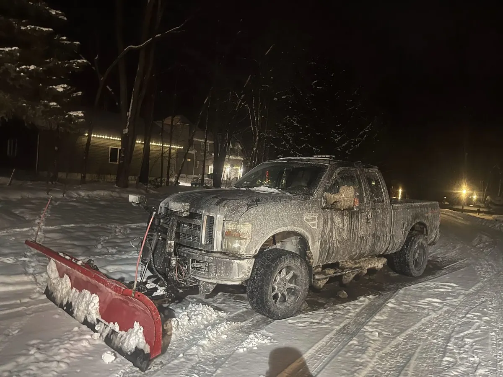

What to do four weeks out, two weeks out, and the week you leave — plus the five things homeowners forget every single year.

Leaving Ohio for three or four months is a great idea right up until something goes wrong at home and nobody notices for six weeks. A pinhole leak, a furnace that quits in January, an ice dam backing water into a bedroom ceiling — these are not rare events. They are what happens to unoccupied houses in a Northeast Ohio winter.
Here is the checklist we walk through with homeowners before they head south, plus the handful of items people almost always forget.
That last item is where most plans quietly fall apart. We will come back to it.
That last one is not optional busywork. Many policies treat an unoccupied home differently, and some limit or exclude coverage for water damage in a house that has been vacant beyond a stated period. Call your agent and ask directly what your policy requires.
Sump pump. Test it before you go and consider a battery backup. A pump that fails in a February thaw floods a basement nobody enters until April.
Garage door opener. Unplug it. An unplugged opener cannot be triggered by a scanner.
The smoke detector chirp. Replace batteries before leaving. A chirping detector in an empty house does nothing except annoy a neighbor into ignoring it.
Outdoor spigots and hoses. Disconnect hoses and shut off the exterior supply. A hose left attached traps water in the spigot line and splits it.
Roof and tree limbs. A dead limb over the house survives most of the year and comes down in the first ice storm.
Here is where the plan usually breaks. Most people ask a neighbor or a family member to keep an eye on things. That works fine for collecting mail and it is generous of them — but keeping an eye on things from the driveway does not catch a slow leak behind a wall, a furnace running but not heating, or a window seal that failed and let moisture in.
A professional home watch service walks the interior and exterior on a set schedule against an actual checklist, documents each visit with photos, and tells you the same day when something looks wrong. That documentation also matters if you ever need to demonstrate to an insurer that the property was being monitored.
The practical advantage of using the crew that already maintains your property: the lawn stays cut, the driveway stays plowed, the mail disappears from the box, and the house looks lived-in from the street. An occupied-looking house is one of the more effective burglary deterrents there is, and it costs nothing extra when it is the same crew.
No lower than 55°F. Interior wall cavities, crawlspaces, and under-sink cabinets run significantly colder than the thermostat reading, so a house held at 45 can have plumbing sitting right at freezing. The savings from going lower does not come close to the cost of a burst pipe.
If nobody is checking the house regularly, yes — shut off at the main and drain the lines. If you have a home watch service doing weekly interior checks, many homeowners leave water on so the house functions normally, with supply valves closed at the washing machine, dishwasher, and icemaker.
It depends entirely on your policy. Many policies have different terms for homes unoccupied beyond a set number of consecutive days, and some restrict water damage claims. Call your agent before you leave, ask what your policy requires, and ask whether documented periodic inspections satisfy it.
Weekly is the standard for a Northeast Ohio winter and it is what we recommend. Frozen pipes, roof leaks, and heating failures all do exponentially more damage the longer they go unnoticed — the difference between a one-week and a one-month discovery is often the difference between a repair and a claim.
Scheduled interior and exterior checks with photo reports after every visit — plus the same crew keeping your lawn and driveway maintained all winter.
Set Up Home Watch